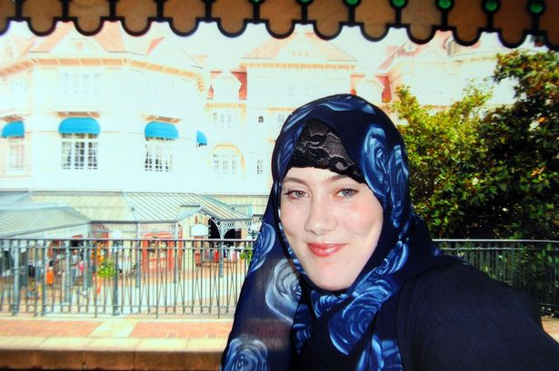
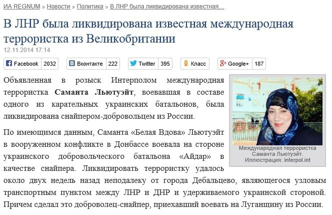

Фейк: в «ЛНР» ликвидирована известная террористка из Великобритании
Российские и пророссийские СМИ со ссылкой на информацию информагентства REGNUM сообщили о том, что объявленная в розыск Интерполом международная террористка Саманта «Белая вдова» Льютуэйт, якобы воевавшая в составе украинского батальона «Айдар», была ликвидирована снайпером-добровольцем из России в районе Дебальцево Донецкой области.

Эту новость растиражировали многие мировые СМИ, в том числе, британские Daily Mirror, Evening Standard и Daily Mail.
Но эта информация не соответствует действительности.Командир батальона «Айдар» Сергей Мельничук заявил о том, что в их батальоне никогда не было и не могло быть Саманты Льютуэйт.
Кроме того, по словам Сергея Мельничука и его заместителя Сергея Граба, батальон «Айдар» на данный момент находится возле города Луганска — примерно в 200-х километрах на восток от Дебальцево.
Опровергли информацию о ликвидированной наемнице и в украинском Совете по вопросам нацбезопасности и обороны (СНБО).«Ничего общего с реальностью у этой информации нет», — заявил пресс-секретарь Информационно-аналитического центра СНБО Андрей Лысенко.
«Террористка-исламистка, которая воюет на стороне украинского добровольческого батальона, в то время как с другой стороны воюют чеченские наемники, — это более чем эксцентричная идея», — прокомментировал ситуацию для Buzzfeed News Роман Выбрановский.
Автор статьи для Regnum Алексей Топоров в качестве доказательств своей правоты ссылается на анонимные источники.«У меня нет оснований не доверять им», — заявил журналист.Кроме того, Топоров предъявил фотографию-скан паспорта «Белой вдовы», который она использовала в 2011 году, чтобы въехать в Кению и устроить теракт в Найроби.Однако было бы наивным предполагать, что террористка для посещения Украины стала бы использовать паспорт, который давно стал известным во всем мире после совершенного ею теракта.Кроме того, фотография-скан этого паспорта находится в свободном доступе в Сети, где журналист, скорее всего, ее и взял.
Posted On: 2014-11-13T21:00:00

Content Date: 2014-11-13
Download Date: 2021-07-16
Document ID: L0C04FIHR